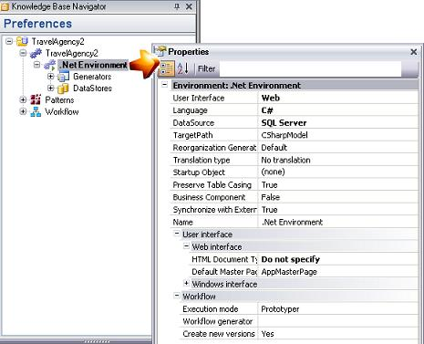

Test Preferences
This section documents test options that can be configured inside the GeneXus IDE, and their behavior.
Some test options are specific to an Environment, and others are set per Knowledge Base.
Environment Test Properties
You need to open the  to set Test properties on it:
General environment testing options
Generate Code Coverage Information: {No, Yes}
If the value is Yes, GeneXus generates source-level runtime code coverage information. Default: No
Run Tests After Build: Boolean
When true, after running a Build or Rebuild All operation in GeneXus IDE, this option will start running all enabled unit test cases automatically. Default: False
Run Unit Tests Level: Numeric
Sets how far, in terms of levels in the call tree, tests related to the selected object are considered to run when selecting the option Run Unit Tests on it.
Default value: 1 (only the tests that directly calls the object are executed)
When 0 is selected, the tests at any level are executed. Unlimited.
Web environment testing options
Log level: {Off, Error, Warn, Info, Debug}
Sets how much information will be logged to the standard output when running a web UI test. Default: Info
- Off: no information is logged by the test itself, this means that still some environment errors and tests runner info can be shown anyway
- Error: commands information and errors are logged
- Warn: commands, errors, and warn messages are logged
- Info: commands, errors, warn and info messages are logged
- Debug: this includes also debugging information. This level is very useful when reporting an issue since it gives important information to understand a failure's cause
Full page screenshot: Boolean
Defines default TakeScreenshot command behavior. If set to true, the webdriver will take a screenshot of the whole page and not only the section within the viewport.
Base URL: String
Set the base URL to open when UI tests don't have a complete URL specified. Default: Environment's web root (set at first execution).
Verify stops execution: Boolean
Defines default Verify command behavior. If set to true, test executions will stop after a failed Verify check.
Screenshot saving mode: {Never, OnError, OnWarning, OnVerifyAndError, Always}
Allows setting the conditions when a screenshot is taken and saved during web UI tests execution. Default: OnError
- Never: screenshots are never taken.
- OnError: screenshots are taken only when a command fails.
- OnWarning: screenshots are taken only when a command fails or has a warning state.
- OnVerifyAndError: screenshots are taken only when a command fails or the command is a Verify command (regardless of whether it fails or not). "Always on errors and always on Verify commands".
- Always: screenshots are taken for all commands (except for the CloseWindow command since screenshots are taken after the command is performed)
Html saving mode: {Never, OnError, OnWarning, OnVerifyAndError, Always}
Allows setting the conditions for when the page's HTML should be saved during web UI tests execution. Default: OnError
For descriptions about available options see the previous setting where those are explained.
File Upload Base Path: String (for UI tests only)
Allows setting a directory as a base path to locate all resources that will be used on FIleUpload commands. When running web tests, this property is combined with the FilePath parameter in FileUpload commands.
KB Version Test Properties
You need to open the KB Version properties and scroll down to Test group properties:

KB version general testing options
Enable mocking: Boolean
Defines whether mocking options will be visible in context menus.
Version: String
Read-only property that shows the GXtest Framework version. GXtest framework is Runner and external objects for UI automation (web and SD)
KB version web testing options
Default Browser: String
The default browser when starting a UI test. This browser will be chosen if you don't explicitly define a browser type using the SetBrowser command. Default: Chrome
Arguments: String
Allows setting special command-line arguments for a web browser. Separate each argument with a space character.
Every browser accepts its own startup arguments:
| Browser | Settings |
|---|---|
| Chrome | https://peter.sh/experiments/chromium-command-line-switches/ |
| Firefox | https://developer.mozilla.org/en-US/docs/Mozilla/Command_Line_Options |
| Edge (Chromium) | https://peter.sh/experiments/chromium-command-line-switches/ |
| Internet Explorer | https://docs.microsoft.com/en-us/previous-versions/windows/internet-explorer/ie-developer/general-info/hh826025(v=vs.85) |
KB Version Unit Test Generation Properties
GXtest allows you to determine data, algorithm, and the number of test cases to be generated for unit tests.
Algorithm { RandomCombination, CartesianProduct, Pairwise }
Allows the user to choose the algorithm used to combine input values for every parameter. This will be reflected in the amount and how exhaustive test cases will be. Default: Random combination.
Random combination: test cases are built using random values for each parameter
Cartesian product: all possible combinations between parameter values are made. The number of test cases will be the product of data values count for every parameter. For instance, if the object has 3 parameters and you input 5 values for each parameter, there will be 5*5*5 test cases: 125.
You can find information at Pairwise combination
Parameter values { Autogenerated, Prompt }
This option allows custom-select data used on test generation, either random (autogenerated) or user-specific (prompt). Default: Autogenerated.
Autogenerated: values sets are built using a mix of fixed and random values for every parameter depending on the parameter’s data type.
Prompt: Before creating the test, a window is prompted to the user, which enables the user to use specific data. Please refer to this article to understand how to generate different sets of data for tests.
Data sets count: Numeric
Set how many data sets will be generated in the test DataProvider, after clicking the "Create Unit Test" option. For the Random Combination algorithm only.
Default: 5
Note: Also there are other settings (low level) that can be set via GXtest config file
Test object properties
In order to access these, you can right-click on a Test Object in the KB Explorer and select properties to open the KB Test object properties.
Enabled: Boolean
Defines whether the test will be taken into consideration when Rebuild All Tests or Run All Tests options are used. When false, the test will be ignored in these instances.
Domain Test Values
This feature allows the user to define comma-separated test values to be used when generating unit tests from procedures. This comes in handy if for defining edge, failing, and working cases, in order to ensure that the autogenerated tests will test all of those scenarios.
In order to define it, we need to access the domain's properties after creation and populate the Test Values property. In order to make the most of this feature, we recommend combining it with either Pairwise or Cartesian Product generation algorithms, to ensure all defined test values are used.